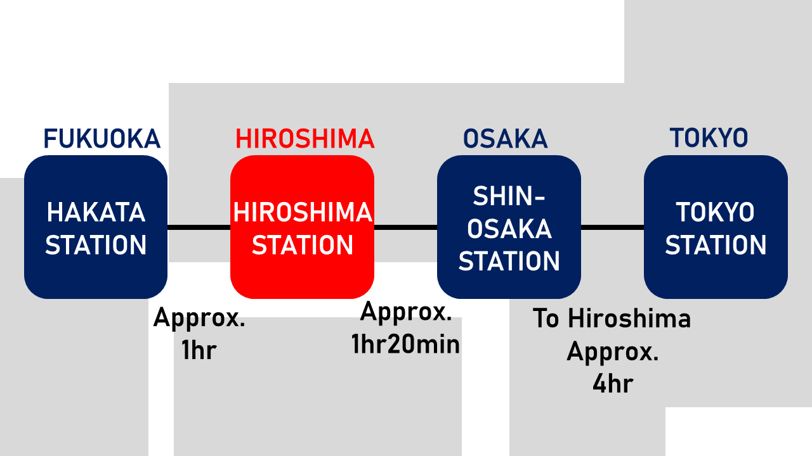

観戦までの10ステップ
上から順に読めば、初めてでも観戦までの流れが分かります。
広島市までのアクセス
START HERE広島は、大阪と福岡の間に位置しています。東京からは羽田空港・成田空港から飛行機で約1時間30分、大阪と福岡からは新幹線でアクセスできます。
広島駅は市街地にあり、マツダ スタジアムにも近い駅です。一方、広島空港は市内から離れており、広島駅周辺までバスで約1時間かかります。

試合日程を確認
CHECK THE DATE試合日程は、カープ公式サイトのチームスケジュールで確認できます。マツダ スタジアム開催の試合は、日程表の球場欄に「マツダ」と表示されています。
プロ野球のシーズンは主に3月から10月です。平日はナイトゲームが多く、土日祝は春や秋はデーゲーム、夏はナイトゲームが多い傾向があります。
雨天中止や開始時間の変更は、カープ公式サイトのトップページで確認しましょう。雨予報でも、試合直前まで中止が発表されないことがあります。
チケットを購入
GET YOUR SEATチケットは、カープ公式ホームページ、マツダ スタジアム窓口、コンビニ・プレイガイドなどで購入できます。旅行前にオンラインで購入しておくと安心ですが、空席があれば当日券を球場窓口で購入できることもあります。
座席を選ぶときは、「ビジター席」に注意してください。ビジター席は旅行者向けではなく、カープの対戦相手チームを応援する人のための席です。
SEAT IMAGE
応援エリア
応援エリア
※詳しい座席位置・ルールは購入前に公式座席図を確認してください。
スタジアムへのアクセス
WALK FROM HIROSHIMA STATIONマツダ スタジアムの最寄り駅は広島駅です。広島駅南口からスタジアムまでは徒歩約10分で、試合日は多くの野球ファンが同じ方向へ歩いています。
Google Mapsでは「MAZDA Zoom-Zoom Stadium Hiroshima」と検索できます。広島空港と広島駅は離れているため、空港から直接向かう場合は移動時間に注意してください。
スタジアムルール
KNOW BEFORE YOU GOマツダ スタジアムでは、ビン・カン・ペットボトル類や危険物は持ち込めません。入場時には手荷物検査があります。
ビジターパフォーマンス席は、カープの対戦相手チームを応援する人のための席です。カープパフォーマンス席は、カープを応援する人のための席です。
再入場は可能ですが、外へ出る場合は再入場用の出口で手続きが必要です。
天気をチェック
OUTDOOR STADIUMマツダ スタジアムは屋外球場です。試合前には、天気予報と公式サイトのお知らせを確認しましょう。
夏は日差しと暑さが強く、春・秋のナイトゲームは肌寒くなることがあります。雨が予想される場合は、レインコートを用意すると安心です。
入場口
ENTER THE BALLPARKマツダ スタジアムには、正面ゲート、JR側ゲート、メインゲートの3つの入場ゲートがあります。席種に関わらず、どのゲートからでも入場できます。
入場時には、紙チケットまたはQRチケットが必要です。チケット提示の前に手荷物検査があるため、バッグの中を見せられるように準備しておきましょう。
一時退場する場合は、各出入口の再入場口で手続きが必要です。
GATE IMAGE
※位置関係のイメージです。実際の導線は現地案内も確認してください。
グッズ
WEAR THE REDカープグッズは、マツダ スタジアム内のショップや、広島駅周辺の販売店で購入できます。ユニフォーム、タオル、メガホン、風船など、観戦を楽しむためのグッズがそろっています。
試合前や試合終了後はショップが混みやすいため、ゆっくり選びたい場合は試合中に立ち寄るのがおすすめです。
ビジターパフォーマンス席ではカープグッズを使えず、カープパフォーマンス席では対戦相手チームのグッズを使えません。
EASY STARTERS
ユニフォームは日本サイズなので、試着またはサイズ表の確認がおすすめです。
球場内のようす
MORE THAN BASEBALL球場内には、飲食店、売店、グッズショップ、トイレ、授乳室、喫煙所などがあります。購入した食べ物や飲み物は、座席で楽しめます。
座席の後ろにあるコンコースは一周でき、場所によってはグラウンドを見ながら歩くこともできます。早めに入場して、球場内を散策するのも観戦の楽しみのひとつです。
試合中のイベント
JOIN THE ENERGY試合前にはスターティングメンバー発表や始球式があり、試合中にはイニング間イベントや大型ビジョンでの映像演出が行われます。
カープの応援は主に攻撃中に行われます。応援歌を知らなくても、周囲に合わせて拍手や手拍子をするだけで楽しめます。
7回表終了後、カープの7回裏の攻撃前にはジェット風船を飛ばします。風船を使う場合は、球場で販売されている専用のものを購入してください。
GAME DAY FLOW
帰り方
PLAN YOUR WAY HOME試合後は、多くの観客が徒歩で広島駅へ向かいます。行きより混雑するため、スタジアムから広島駅までは徒歩約15〜20分を見込んでおきましょう。
広島駅では在来線も混雑します。特に宮島口・岩国方面へ向かう列車は利用者が多いため、新幹線や電車の時間には余裕を持つことをおすすめします。
野球は終了時刻が決まっていません。延長戦などで試合が長引くこともあるため、最終電車や新幹線を利用する場合は注意してください。